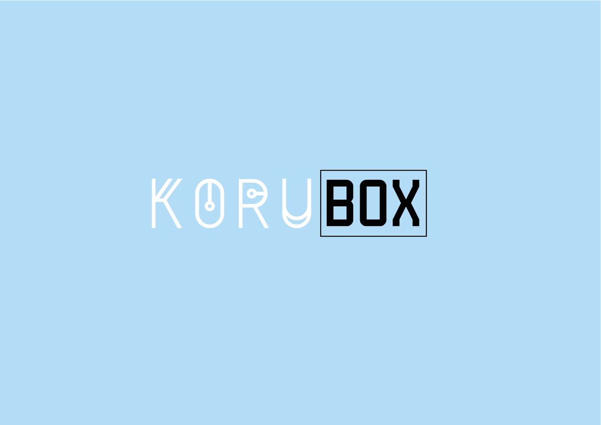

ADD basics
Assignment
During the course our target was to create a business idea utilizing additive manufacturing and pitch it. To make it more interesting, the business development was held in the spirit of the show Dragons' Den. That meant weaker ideas were eliminated and initial two member teams were split and each member was assigned to a new team. Due to the nature of the course I was part of two teams.
First try
I was paired with industrial engineering student in the first phase of the course. Our initial idea as a pair was to utilize 3D-printing for manufacturing cycling helmets with highly complex structure. The complex honeycomb structure isn't possible with traditional manufacturing methods. The idea was based on study done in Cardiff University in Great Britain. After the first pitch our idea didn't unfortunately reach the next round.
Second chance
I was attracted to the second team by the possibility of changing the initial idea after the first pitch. Our team was multidisciplinary having one electrical, one bioinformatics and one computer science student. Our design side was reinforced by an industrial designer. We brainstormed throught different ideas and business models. One of the strong suits of 3D-printing is heavy customization which we wanted to utilize in our idea. We ended up doing a subscription jewellery service with custom jewellery not available from anywhere else. We wanted to have different designs every month shipped to customers door. Exclusiveness of products offered through our service was aimed to appeal to fashion bloggers and early adaptors. This was also an aspect in reducing the marketing costs of our service. It relied heavily on word of mouth offered by bloggers and passionate customers.
Proving the idea
To prove our idea in the Dragon's Den we had to convince venture capitalists that the idea could create value for the customers. Our designer sketched a few different jewellery designs. I was responsible for moving the concepts into physical realm with 3D-printing. It took me around one workday to print and treat all the pieces we wanted to showcase. It was trivial to print rings of different sizes in quick succession. We also had necklace with dynamic shape to emphasize the choice of 3D-printing.
Summary
It proved quite hard to come up with an idea that would be profitable and with reasonable price. We gathered all different costs into one spreadsheet. This gave quite good perspective on cost breakdown in business model focusing on physical products.
Things I learned:
- Pitching
- When and why to use additive manufacturing
- Developing business
- Brainstorming